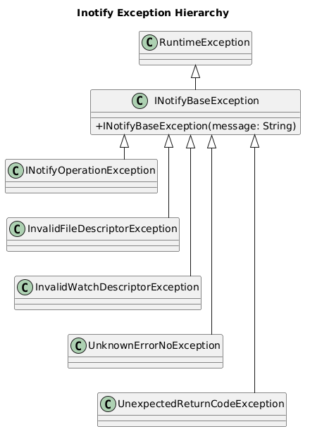
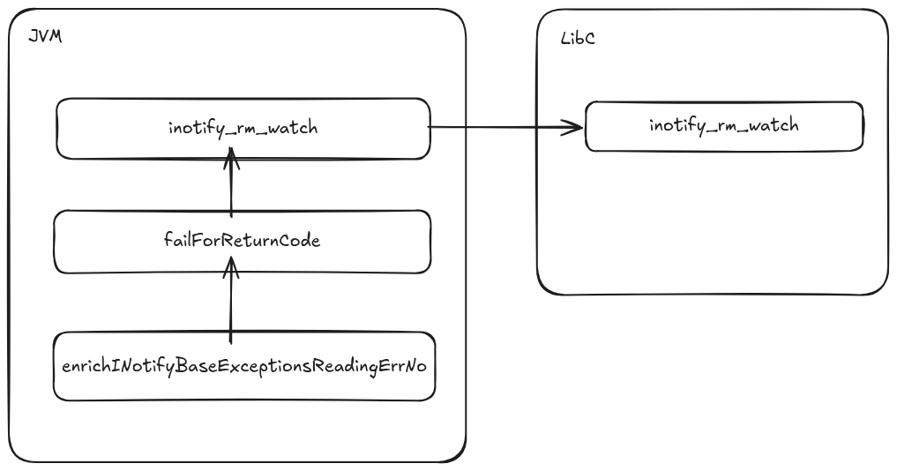

Handling Errors in Java Panama: This side or the other (part 1)
Photo taken from pixabay
Been Thinking about how to properly handle error codes returned from invoking native functions using Java Panama recently. Also tempted to apply some Exception classe hierarchies, I kept dreaming how a container aware approach would look like? what it would take to apply IoC here.
I'll explain my 3 attempts at finding ways to build an intuition for building a container aware means for handling errors when working with Java's Foregin Functions and Memory APIs. All my attempts are about translating error codes returned by inotify_rm_watch into an Exception class Hierarchy as shown in the following class diagram:

Note
inotify_rm_watchdocs can be found here
Note
If you are new to project Panama you can read my previous blog posts for an introduction here.
Attempt 1: Just Check the Error Code¶
Base idea is very clear: Just read the error code returned from inotify_rm_watch invocation, and map it to an Exception class.
public static void checkTheReturnValueOfDownCallAndThrowException(MethodHandle inotifyRmWatch) throws Throwable {
var returnCode = (int) inotifyRmWatch.invoke(Integer.MAX_VALUE, Integer.MAX_VALUE);
if (returnCode == -1) {
throw new INotifyOperationException("operation failed");
}
}
Here is the test for this demo:
@DisplayName("Basic error handling by checking the return value of downcall handle")
@Test
public void checkingReturnValueForErrors() {
try (var arena = Arena.ofConfined()) {
// GIVEN
var libCHelpers = new LibCDownCallHelpers(arena);
var inotifyRmWatchFunctionDescriptor = FunctionDescriptor.of(
ValueLayout.JAVA_INT, ValueLayout.JAVA_INT, ValueLayout.JAVA_INT
);
var inotifyRmWatchHandler = assertDoesNotThrow(() ->
libCHelpers.findDownCallHandle("inotify_rm_watch", inotifyRmWatchFunctionDescriptor)
);
// THEN
assertThrows(INotifyOperationException.class, () -> {
ErrorHandlingDemo.checkTheReturnValueOfDownCallAndThrowException(inotifyRmWatchHandler);
});
}
}
Also Here is the source code for rs.pub.reza.panama.errorhandling.LibCDownCallHelpers, which contains utilities to find methods in the Lib C:
package rs.pub.reza.panama.errorhandling;
import java.lang.foreign.Arena;
import java.lang.foreign.FunctionDescriptor;
import java.lang.foreign.Linker;
import java.lang.foreign.SymbolLookup;
import java.lang.invoke.MethodHandle;
public class LibCDownCallHelpers implements AutoCloseable {
private final Arena memoryArena;
private final Linker linker = Linker.nativeLinker();
private final SymbolLookup libCSymbolLookup;
public LibCDownCallHelpers(Arena lookupArena) {
this.memoryArena = lookupArena;
this.libCSymbolLookup = SymbolLookup.libraryLookup("libc.so.6", memoryArena);
}
public MethodHandle findDownCallHandle(String functionName, FunctionDescriptor descriptor) {
return linker.downcallHandle(
libCSymbolLookup.findOrThrow(functionName),
descriptor
);
}
public MethodHandle findDownCallHandleWithLinkerOptions(String functionName, FunctionDescriptor descriptor, Linker.Option... options) {
return linker.downcallHandle(
libCSymbolLookup.findOrThrow(functionName),
descriptor,
options
);
}
@Override
public void close() throws Exception {
memoryArena.close();
}
}
Simple enough!¶
This approach is very straight forward, just read the code, if it is negative (or within a certain range) throw the proper exception. Now let's see if we can
throw some cool IoC ideas at it.
Attempt 2: From Return Code to Exception¶
Following my motivation to build a baseline for separating the concern of Error Handling from where the DownCall method handle is executed,
we can take advantage of MethodHandle::filterReturnValue to extract the error code to Exception translation logic.
Here is the idea, say we have : failForReturnCode method defined as:
public class INotifyErrorHelpers {
private final static int EBADF = 9;
private final static int EINVAL = 22;
public static int failForReturnCode(int returnCode) {
switch (returnCode) {
case -1:
throw new INotifyOperationException();
case 0:
return returnCode;
default:
throw new UnexpectedReturnCodeException(returnCode);
}
}
// ...
}
Note
The return value is
int, same asinotify_rm_watch
Then we can do somethng cool by adding this seperated concern on top of the inotify_rm_watch MethodHandle:
public static void checkTheReturnValueUsingFilterReturnValue(MethodHandle inotifyRmWatch) throws Throwable {
var filterReturnValueHandler = MethodHandles.
lookup()
.findStatic(INotifyErrorHelpers.class,
"failForReturnCode",
MethodType.methodType(int.class, int.class)
);
var decoratedRmWatchHandler = MethodHandles.filterReturnValue(inotifyRmWatch, filterReturnValueHandler);
decoratedRmWatchHandler.invoke(Integer.MAX_VALUE, Integer.MIN_VALUE);
}
Now, the error code translation sits on top of the original native inotify_rm_watch MethodHandler!
Let's write the test:
@DisplayName("Check the Return using MethodHandle::filterReturnValue")
@Test
public void checkingReturnValueForErrorsUsingFilterReturnValue() {
try (var arena = Arena.ofConfined()) {
// GIVEN
var libCHelpers = ...
var inotifyRmWatchFunctionDescriptor = ...
var inotifyRmWatchHandler = ...
// THEN
assertThrows(INotifyOperationException.class, () -> {
ErrorHandlingDemo.checkTheReturnValueUsingFilterReturnValue(inotifyRmWatchHandler);
});
}
}
Seprataed the concern!¶
A baby step done nicely! We decorated the raw native inotify_rm_watch MethodHandle and then separated the error code translation step.
The error code translation is basically "docrated" by implementing function composition using a method handler combinator.
Attempt 3: Sometimes, It is more than Return Code¶
There are cases where inspecting returned error code is not enough. If you have looked up the Man pages for inotify_rm_watch you'll encounter the following:
RETURN VALUE
On success, inotify_rm_watch() returns zero. On error, -1 is
returned and errno is set to indicate the error.
ERRORS
EBADF fd is not a valid file descriptor.
EINVAL The watch descriptor wd is not valid; or fd is not an
inotify file descriptor.
From the text above in documentation, we can conclude that in order to understand "what" has gone wrong, we need to inspect the value of errno variable, which can contain two of following error codes: EBADF or EINVAL.
In Java 20, The idea of "Capture Call State" has been introduced as Linker option via Linker.Option.captureCallState and stablized in JEP 454. The idea is to capture state or information that exists outside the return value of native function.
In our case of inotify_rm_watch we need to read the errno set by function to better understand what has gone wrong.
Preparing the Setup¶
To read errno we need some ground work in place:
1- Adding Linker Option
2- Defining the memory layout
3- Allocating memory for capturing errno
We start by applying these in the test as explained by the comment first:
@DisplayName("Using Linker.Option::captureCallState")
@Test
public void checkingErrorNoUsingCaptureCallState() {
try (var arena = Arena.ofConfined()) {
var libCHelpers = new LibCDownCallHelpers(arena);
// Setup the linker Option
var captureErrNoDuringExecutionLinkerOption = Linker.Option.captureCallState("errno");
// define the moemory layout
var captureErrNoMemoryLayout = Linker.Option.captureStateLayout();
// allocating memory from the Arena
var captureErrNoMemorySegment = arena.allocate(captureErrNoMemoryLayout);
var inotifyRmWatchFunctionDescriptor = ...
var inotifyRmWatchHandler = assertDoesNotThrow(() ->
libCHelpers.findDownCallHandleWithLinkerOptions("inotify_rm_watch",
inotifyRmWatchFunctionDescriptor,
captureErrNoDuringExecutionLinkerOption) // Then pass the Linker Option
);
var exception = assertThrows(INotifyOperationException.class, () -> {
ErrorHandlingDemo.checkTheReturnValueAndReadErrorNoForEnrichingExceptionDetails(inotifyRmWatchHandler, captureErrNoMemoryLayout, captureErrNoMemorySegment);
});
assertNotNull(exception.getCause());
assertInstanceOf(InvalidFileDescriptorException.class, exception.getCause());
}
}
Here is how the Linker.Option is passed down by findDownCallHandleWithLinkerOptions as last argument to Linker::downCallHandle.
public MethodHandle findDownCallHandleWithLinkerOptions(String functionName, FunctionDescriptor descriptor, Linker.Option... options) {
return linker.downcallHandle(
libCSymbolLookup.findOrThrow(functionName),
descriptor,
options
);
}
Note
When the linker option
Linker.Option.captureCallState("errno")is passed down, the returned Method Handle will now take following signature:
This implies that the
MemorySegmentshould be provided now as first argument toMethodHandle::invokefor the returnedMethodHandle.
Reading errno from its memory¶
Next we define enrichINotifyBaseExceptionsReadingErrNo static method which demonstrates how it reads errorno using provided MemorySegment and VarHandle.
It tries to understand the underlying error code stored in errno and then sets proper exception for initialCause on the Exception thrown originally by failForReturnCode:
public static int enrichINotifyBaseExceptionsReadingErrNo(INotifyBaseException ex, VarHandle errNoVarHandle, MemorySegment capturedErrNo) {
var errNo = (int) errNoVarHandle.get(capturedErrNo, 0L);
var cause = switch (errNo) {
case EBADF -> new InvalidFileDescriptorException("Invalid fd");
case EINVAL -> new InvalidWatchDescriptorException("Invalid wd");
default -> new UnknownErrorNoException(errNo);
};
ex.initCause(cause);
throw ex;
}
Decorating Method Handler with Exception enrichment¶
Finally this code demonstrates how all pieces fall into place together. checkTheReturnValueAndReadErrorNoForEnrichingExceptionDetails first builds the VarHandle from the provided memory layout. Then the codes decorates the raw inotify_rm_watch MethodHandle the following way:
1- provide the raw inotify_rm_watch with the required MemorySegment in order to keep the invocation signature same as before: (int, int)int
2- decorate the raw inotify_rm_watch with method handle of failForReturnCode so that a negative return code will throw a generic Exception.
3- add another decoration layer via MethodHandlers::catchException and provide all the necessary dependency to it to read errno: The VarHandle and the MemorySegment

Here is the code that glues all of above together:
public static void checkTheReturnValueAndReadErrorNoForEnrichingExceptionDetails(MethodHandle inotifyRmWatchHandler, StructLayout captureErrNoMemoryLayout, MemorySegment captureErrNoMemorySegment) throws Throwable {
// 1. The method handler now requires the memory segment to be provided for
// capturing the state of errno variable.
// we provide this argument via MethodHandle so the signature of invocation looks same as before:
// (int, int)int
var decoratedHandler = provideMethodHandleArgument(
inotifyRmWatchHandler,
0,
captureErrNoMemorySegment
);
// 2. convert return code to exception
var filterReturnValueHandler = findStaticMethodHandle(INotifyErrorHelpers.class,
"failForReturnCode",
MethodType.methodType(int.class, int.class)
);
decoratedHandler = MethodHandles
.filterReturnValue(decoratedHandler, filterReturnValueHandler);
// 3. Setup the exception handler and provide the memory dependency to be able to read
// the errno when an exception is thrown by "failForReturnCode".
var exceptionEnrichHandler = findStaticMethodHandle(INotifyErrorHelpers.class,
"enrichINotifyBaseExceptionsReadingErrNo",
MethodType.methodType(int.class,
INotifyBaseException.class,
VarHandle.class,
MemorySegment.class
)
);
var errNoVarHandle = captureErrNoMemoryLayout.varHandle(
MemoryLayout.PathElement.groupElement("errno")
);
// provide the VarHandle and memory segment that is required by the
// exception enrichment method.
exceptionEnrichHandler = provideMethodHandleArgument(
exceptionEnrichHandler,
1,
errNoVarHandle,
captureErrNoMemorySegment
);
// register the enricher handler method with its dependencies provided as a
// exception try-catch block on the decorated rm watch handler.
decoratedHandler = MethodHandles
.catchException(decoratedHandler, INotifyBaseException.class, exceptionEnrichHandler);
decoratedHandler.invoke(Integer.MAX_VALUE, Integer.MIN_VALUE);
}
Feels like IoC¶
We achieved quite a few wins with 3rd attempt:
- Extracting error handling concern at call site into a separate layer
- Enabled extending the error details and providing (injecting) the memory handling dependencies (it is kind of hairy for now, but we did it)
3rd approach provides the baseline I have in mind. It enables adding more sophisticated ways of error handling thanks to decorated MethodHandles.
My hope is that approaches like this, can help us to maintain clean Error handling and Exception translation layers. Thanks to ideas we already know in Java and IoC patterns!
Code¶
Whole code can be found here.
What's next then?¶
In next part, implementing a clean Annotation driven error handling based on approach 3, should really help it shine.